The Making of Stuffed Green Peppers and Cabbage Rolls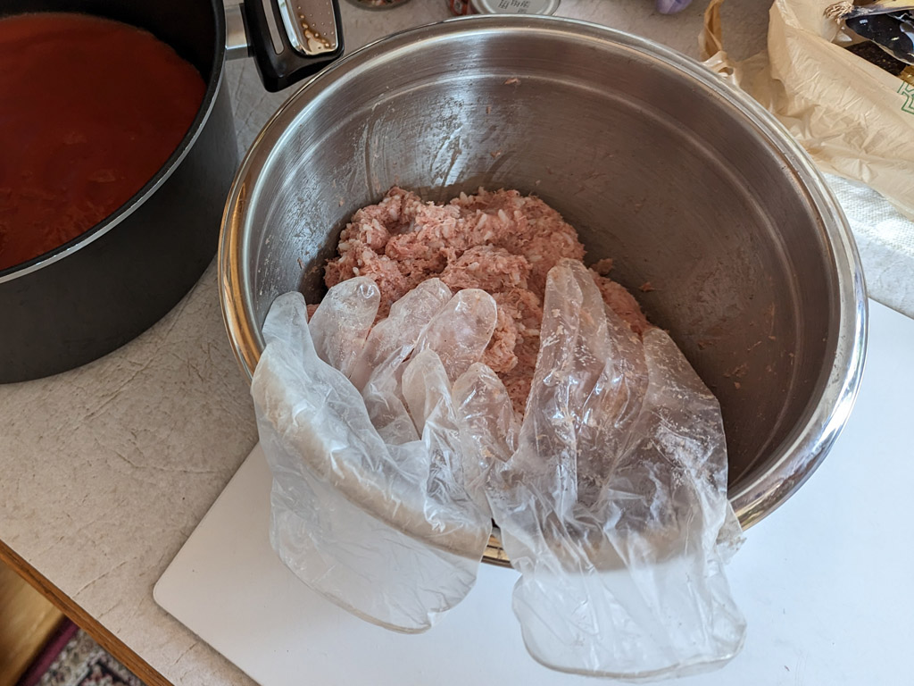 It all starts out with Mei-O mixing about one and a half pounds of ground turkey with already cooked rice. It's pretty gooey, so she wears gloves when smushing it all together by hand. 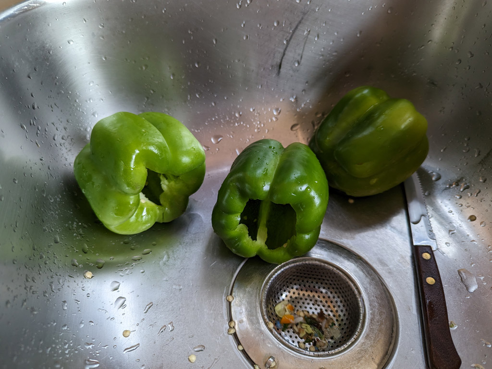 Then three green peppers get gutted. 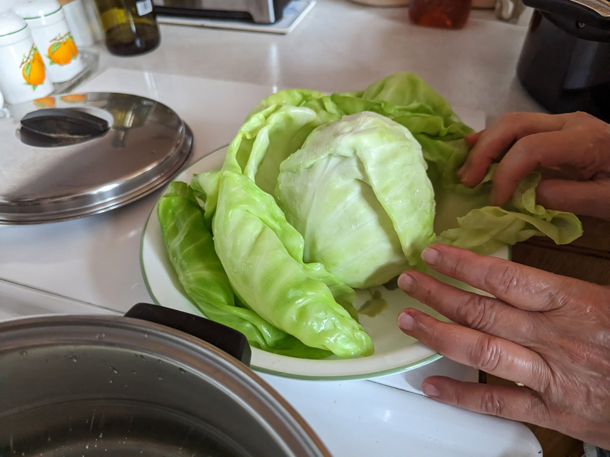 The cabbage which sat in hot water on the stove to soften it up and make it "rollable" is peeled from its head to make the cabbage rolls. 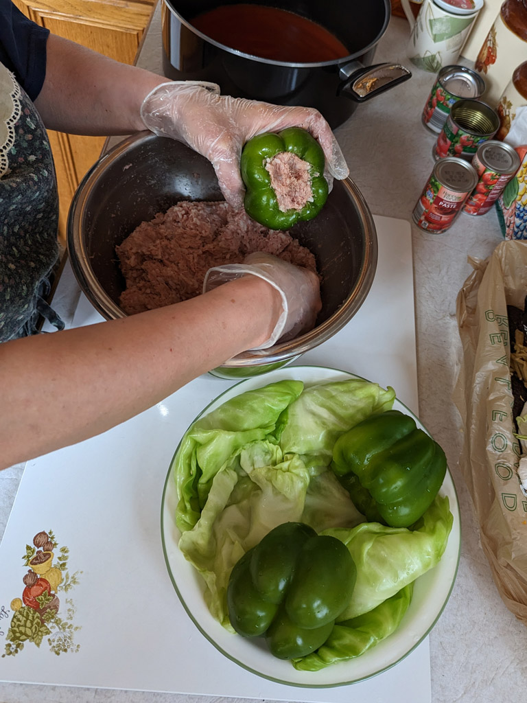 Then it's time to stuff the peppers. Just shove that stuff right in there. 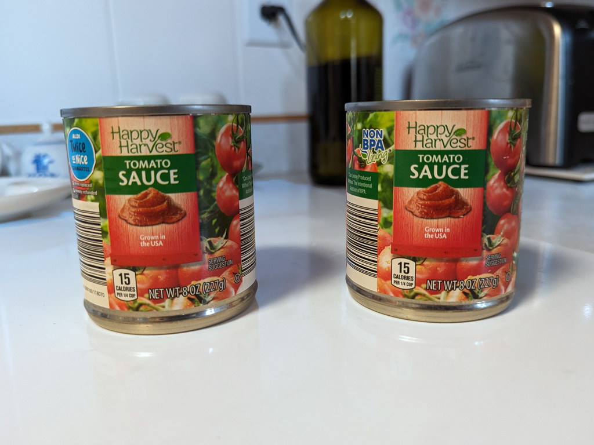 Then add two small cans of tomato sauce (8 oz.)... 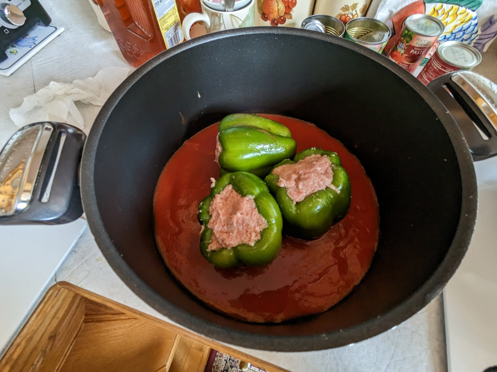 ...into the pot and add the peppers. 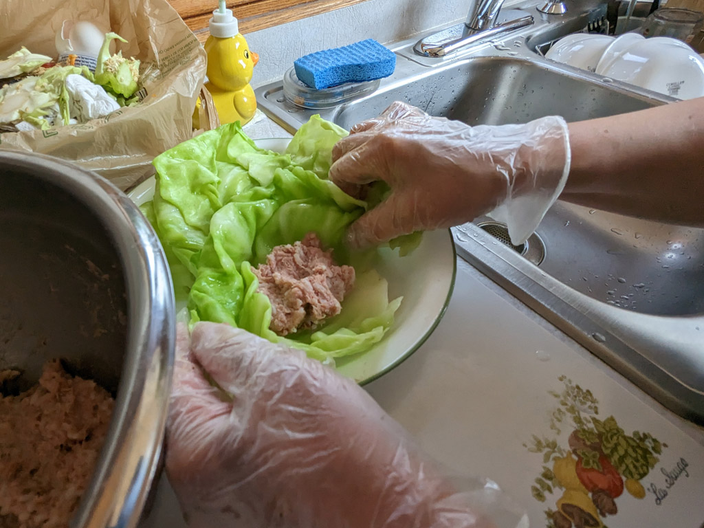 Then the cabbage rolls get rolled up... 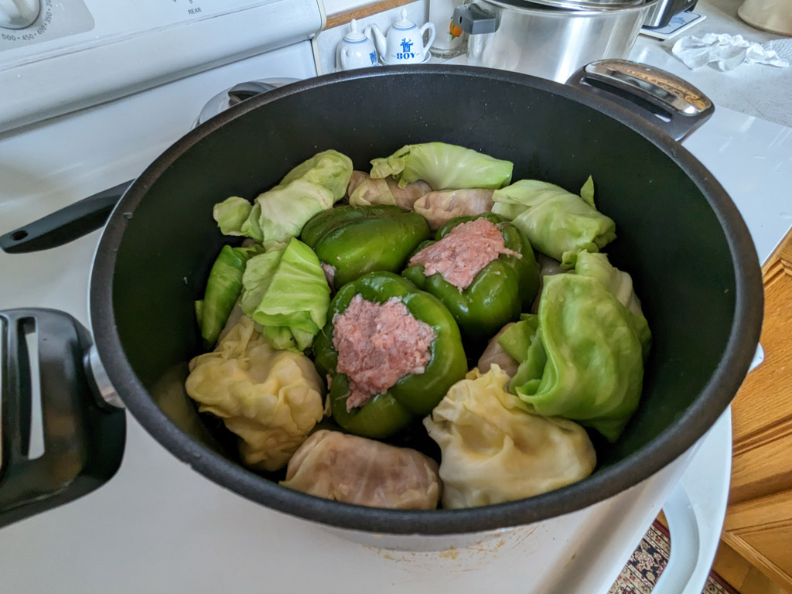 ...and added to the pot. 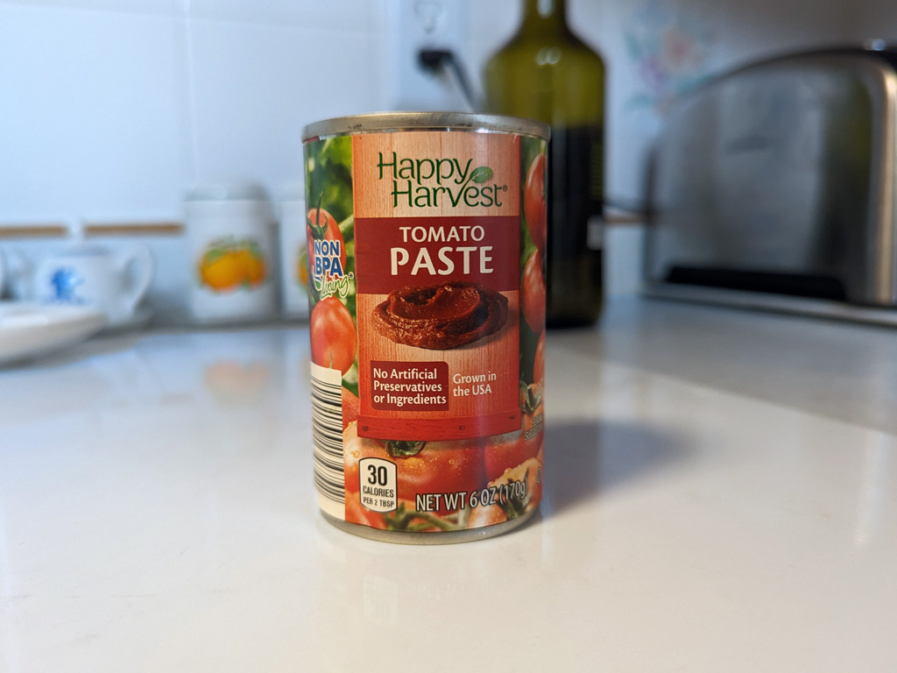 Add some tomato paste (6 oz.)... 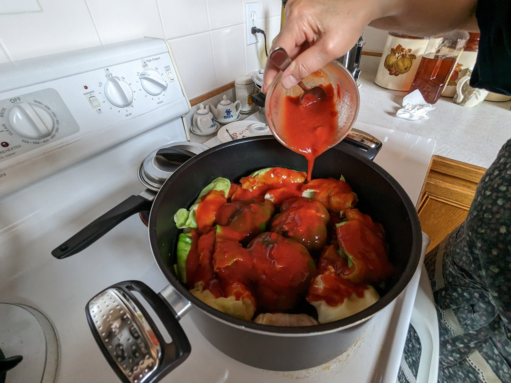 ...mixed with some water to thin it out, and... 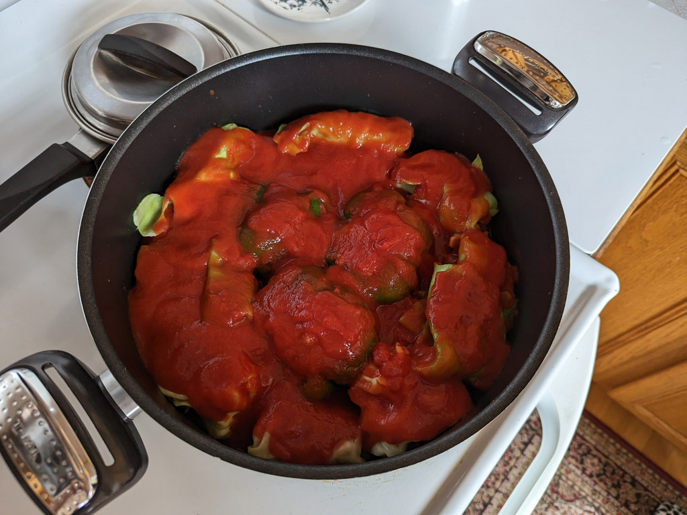 ...what starts out on a low burner, after two hours of slow cooking, ends up... 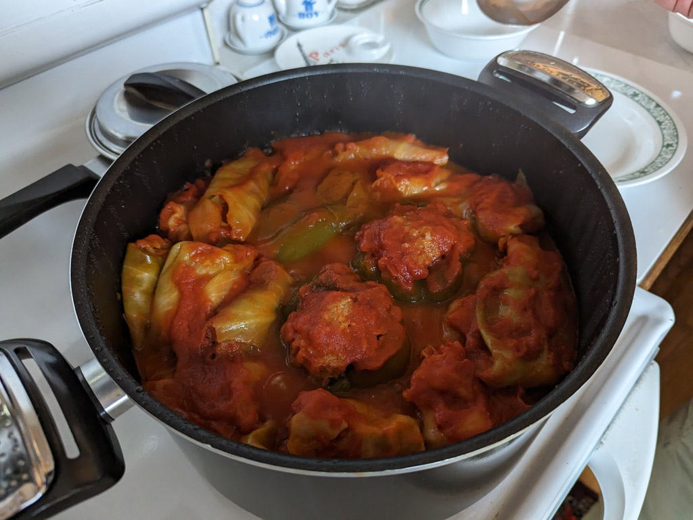 ...like this! 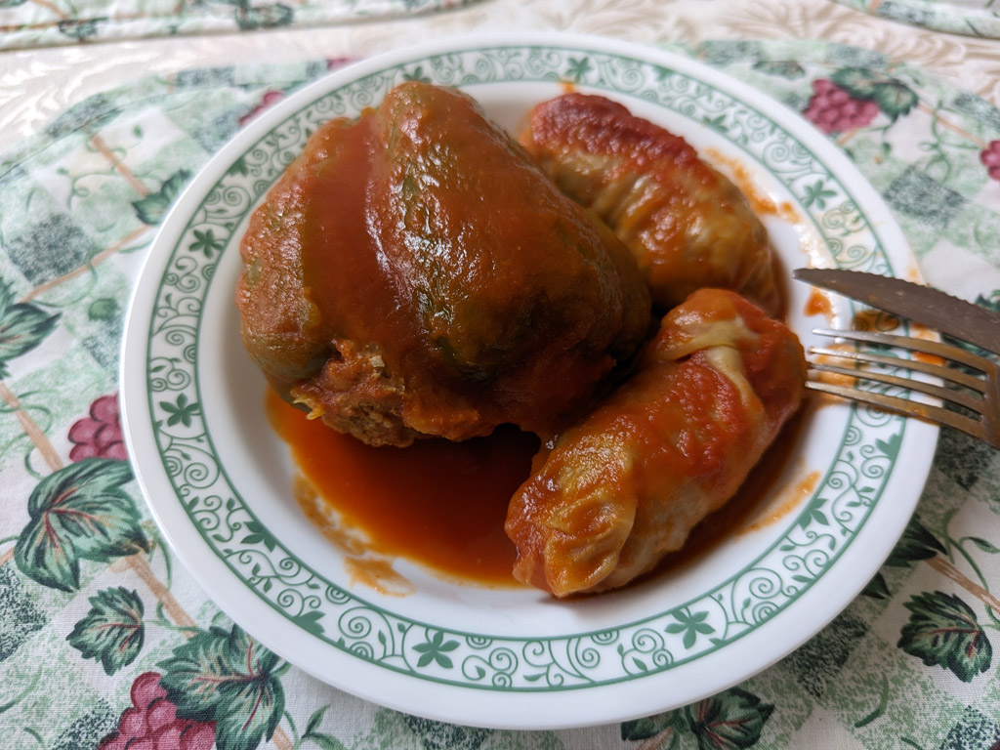 Ready to eat and so good! |